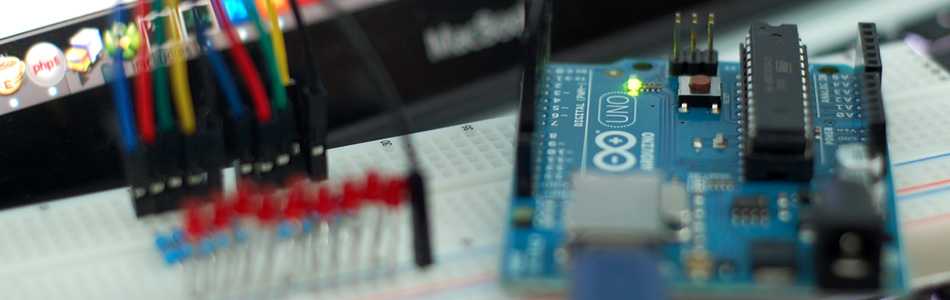

Turn on a light, or 10. Arduino control over serial

This may sound totally obvious, and it may be, but I'm going to show you anyways. For this example I'm going to use the serial monitor built in to the Arduino software, but you can use anything that will write serial to the Arduino. And, although I'm only showing the hookup for LEDs, bildr is all about simple things that you can easily expand / change to make something really cool. So, not to leave you out in the cold, I'll talk about next steps and how you could expand on this in a bit.
Keeping it simple
Sending a long serial string in Arduino is super simple ( Serial.print("Hello") ) , but reading one is a little more difficult. To simplify things, the commands we will send to the Arduino will all be single character. It may sound limiting, but you have 100 or so usable single characters (about 200 if you use special characters) so you can call that many functions over serial in like 3 lines of code. Later in the article, I will also use the single character calls as an advantage other than just saving coding time.
{kind=link}
{kind=link}
The core code setup for this is:
if (Serial.available()) { char ser = Serial.read(); //OR int ser = Serial.read(); }
What this does is it checks to see if any serial is available in the arduino's buffer, and if it is, it reads the next available byte as either a character (char) or an integer (int). If you read the serial byte as an int, the read byte will be stored as its ASCII decimal value. So "a" will be read as 97, 0 as 48, 1 as 49 and so on. If they are read as a characters (char), "a" will be read as 'a', and numbers will be read as characters as well. So 1 will be read as '1'. This is not the number 1, but the character '1'. He can not be used as a number, and must be compared as a string, not an int (1 != '1'; '1' == '1'). - NOTE: in Arduino, the use of single ' and double " quotes are not interchangeable. Single quotes signify a character, while double quotes signify a string.
Naturally you would think that reading the value as a "char" would make life easier because you could just do something like this:
if (Serial.available()) { char ser = Serial.read(); if(ser == 'a'){ //do this }else if(ser == '1'){ //do that } }
This is simple, and if you are going to have a long list of commands, you could just use a switch case statement instead a long list of if/else if.
But if you read the serial as INTs, you can use the read values as numbers, and use them to tell the arduino what pins to power. By simply knowing that the decimal equivalent of 0 through 9 in ASCII is 48 through 57, and knowing we want to write to pins 2 - 11... We can just subtract 46 from the ascii value, and use the difference as the pin number.
if (Serial.available()) { int ser = Serial.read(); //read serial as ascii integer if(ser >= 48 && <= 57){ //is this serial byte the ASCII equivalent of 0 through 9? int usePin = ser - 46; digitalWrite(usePin, HIGH); //make that pin output HIGH } }
With that simple code, you can send serial 0 - 9 to turn on pins 2 - 11. There is a good reason I choose pins 2-11 by the way. Pins 0 and 1 are used for serial, so you could connect another serial device to the arduino to these pins and be able to trigger the code, and pin 13 blinks 3 times on startup, and I'd rather my pins not do anything I didn't tell them to do. (incase I had a relay or something hooked up to it)
Without further ado, here is the same thing written 2 different ways.
Both of these examples will read from the serial port looking for numbers 0-9 and control pins 2-11 respectively.
void setup(){ Serial.begin(9600); //Set all the pins we need to output pins pinMode(2, OUTPUT); pinMode(3, OUTPUT); pinMode(4, OUTPUT); pinMode(5, OUTPUT); pinMode(6, OUTPUT); pinMode(7, OUTPUT); pinMode(8, OUTPUT); pinMode(9, OUTPUT); pinMode(10, OUTPUT); pinMode(11, OUTPUT); } void loop (){ if (Serial.available()) { //read serial as ascii integer int ser = Serial.read(); //Print the value in the serial monitor Serial.println(ser); if(ser >= 48 && ser <= 57){ //The ascii equivilent of numbers 0 - 9 are 48 - 57 // so subtracting 46 from the ascii gives us 2 - 12 (the pins we want to use) int usePin = ser - 46; triggerPin(usePin); } } } void triggerPin(int pin){ digitalWrite(pin, HIGH); delay(250); digitalWrite(pin, LOW); }
AND
void setup(){ Serial.begin(9600); //Set all the pins we need to output pins pinMode(2, OUTPUT); pinMode(3, OUTPUT); pinMode(4, OUTPUT); pinMode(5, OUTPUT); pinMode(6, OUTPUT); pinMode(7, OUTPUT); pinMode(8, OUTPUT); pinMode(9, OUTPUT); pinMode(10, OUTPUT); pinMode(11, OUTPUT); } void loop (){ if (Serial.available()) { //read serial as a character char ser = Serial.read(); //NOTE because the serial is read as "char" and not "int", the read value must be compared to character numbers //hence the quotes around the numbers in the case statement switch (ser) { case '0': triggerPin(2); break; case '1': triggerPin(3); break; case '2': triggerPin(4); break; case '3': triggerPin(5); break; case '4': triggerPin(6); break; case '5': triggerPin(7); break; case '6': triggerPin(8); break; case '7': triggerPin(9); break; case '8': triggerPin(10); break; case '9': triggerPin(11); break; } } } void triggerPin(int pin){ digitalWrite(pin, HIGH); delay(250); digitalWrite(pin, LOW); delay(250); }
Advantages of single characters commands
Because we are using single character commands, we can actually send a long list of commands as one string. In your serial monitor, sending "0123456789" will actually queue up all of these, and execute them one by one. So this would turn on/off pin 2,3,4,5,6,7,8,9,10,11 in order. This can be really cool if you enter a really long pattern, or get creative and make this do something else.
Extending the idea
So now that you have some examples, let's talk about extending this idea. LEDs are lame. Sorry, but everyone has done it. But who has controlled 10 blenders over serial? Put different amounts of water in each one and make a song with the different noises. This can be done so easily too. Just swap the LEDs for these: http://www.sparkfun.com/products/9842 - These will switch 10 amps, and can be controlled by the arduino power with no transistor or external power.
Or... Go high power 12v and control motors, or lamps, whatever. Just strap one of these to it: http://www.sparkfun.com/products/10305 - Now you can control up to 8 amps and 12v per channel. Pneumatic air valves are 12v! Make a paint ball gun that can shoot from 6 different barrels (think different colors). You could even sequence it to paint something!
In conclusion
I hope you think outside the box with this one and see how easy it can be to use serial commands on the arduino. And if you do expand on this idea, please let us know what you do with this, we would love to post it here in the blog.
Article taken from bildr.org with minor changes - I am the original author of this content